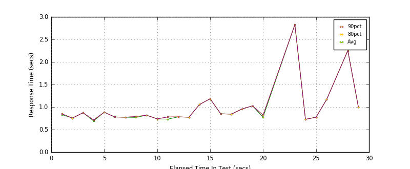
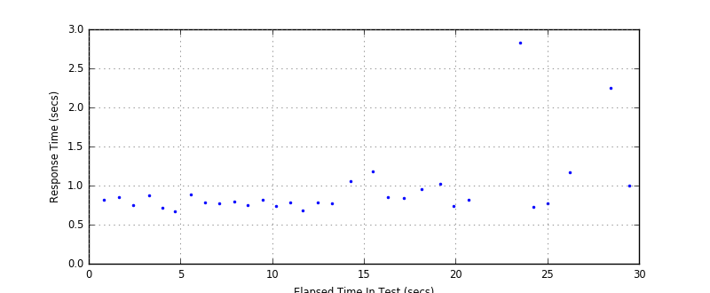
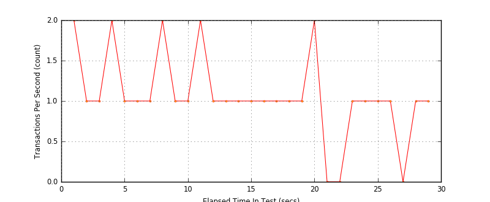

Performance Results Report
Summary
transactions: 32
errors: 0
run time: 30 secs
rampup: 0 secs
test start: 2016-07-08 12:32:58
test finish: 2016-07-08 12:33:27
time-series interval: 1 secs
workload configuration:
| group name | threads | script name |
|---|
| user_group - 1 | 1 | v_user.py |
All Transactions
Transaction Response Summary (secs)
| count | min | avg | 80pct | 90pct | 95pct | max | stdev |
|---|
| 32 | 0.672 | 0.950 | 0.996 | 1.167 | 2.254 | 2.828 | 0.450 |
Interval Details (secs)
| interval | count | rate | min | avg | 80pct | 90pct | 95pct | max | stdev |
|---|
| 1 | 2 | 2.00 | 0.813 | 0.832 | 0.851 | 0.851 | 0.851 | 0.851 | 0.027 |
| 2 | 1 | 1.00 | 0.755 | 0.755 | 0.755 | 0.755 | 0.755 | 0.755 | 0.000 |
| 3 | 1 | 1.00 | 0.874 | 0.874 | 0.874 | 0.874 | 0.874 | 0.874 | 0.000 |
| 4 | 2 | 2.00 | 0.672 | 0.692 | 0.712 | 0.712 | 0.712 | 0.712 | 0.028 |
| 5 | 1 | 1.00 | 0.885 | 0.885 | 0.885 | 0.885 | 0.885 | 0.885 | 0.000 |
| 6 | 1 | 1.00 | 0.779 | 0.779 | 0.779 | 0.779 | 0.779 | 0.779 | 0.000 |
| 7 | 1 | 1.00 | 0.775 | 0.775 | 0.775 | 0.775 | 0.775 | 0.775 | 0.000 |
| 8 | 2 | 2.00 | 0.749 | 0.770 | 0.790 | 0.790 | 0.790 | 0.790 | 0.029 |
| 9 | 1 | 1.00 | 0.818 | 0.818 | 0.818 | 0.818 | 0.818 | 0.818 | 0.000 |
| 10 | 1 | 1.00 | 0.738 | 0.738 | 0.738 | 0.738 | 0.738 | 0.738 | 0.000 |
| 11 | 2 | 2.00 | 0.682 | 0.731 | 0.780 | 0.780 | 0.780 | 0.780 | 0.070 |
| 12 | 1 | 1.00 | 0.782 | 0.782 | 0.782 | 0.782 | 0.782 | 0.782 | 0.000 |
| 13 | 1 | 1.00 | 0.774 | 0.774 | 0.774 | 0.774 | 0.774 | 0.774 | 0.000 |
| 14 | 1 | 1.00 | 1.057 | 1.057 | 1.057 | 1.057 | 1.057 | 1.057 | 0.000 |
| 15 | 1 | 1.00 | 1.184 | 1.184 | 1.184 | 1.184 | 1.184 | 1.184 | 0.000 |
| 16 | 1 | 1.00 | 0.850 | 0.850 | 0.850 | 0.850 | 0.850 | 0.850 | 0.000 |
| 17 | 1 | 1.00 | 0.843 | 0.843 | 0.843 | 0.843 | 0.843 | 0.843 | 0.000 |
| 18 | 1 | 1.00 | 0.955 | 0.955 | 0.955 | 0.955 | 0.955 | 0.955 | 0.000 |
| 19 | 1 | 1.00 | 1.026 | 1.026 | 1.026 | 1.026 | 1.026 | 1.026 | 0.000 |
| 20 | 2 | 2.00 | 0.733 | 0.778 | 0.822 | 0.822 | 0.822 | 0.822 | 0.062 |
| 21 | 0 | 0 | N/A | N/A | N/A | N/A | N/A | N/A | N/A |
| 22 | 0 | 0 | N/A | N/A | N/A | N/A | N/A | N/A | N/A |
| 23 | 1 | 1.00 | 2.828 | 2.828 | 2.828 | 2.828 | 2.828 | 2.828 | 0.000 |
| 24 | 1 | 1.00 | 0.728 | 0.728 | 0.728 | 0.728 | 0.728 | 0.728 | 0.000 |
| 25 | 1 | 1.00 | 0.774 | 0.774 | 0.774 | 0.774 | 0.774 | 0.774 | 0.000 |
| 26 | 1 | 1.00 | 1.167 | 1.167 | 1.167 | 1.167 | 1.167 | 1.167 | 0.000 |
| 27 | 0 | 0 | N/A | N/A | N/A | N/A | N/A | N/A | N/A |
| 28 | 1 | 1.00 | 2.254 | 2.254 | 2.254 | 2.254 | 2.254 | 2.254 | 0.000 |
| 29 | 1 | 1.00 | 0.996 | 0.996 | 0.996 | 0.996 | 0.996 | 0.996 | 0.000 |
Graphs
Response Time: 1 sec time-series

Response Time: raw data (all points)

Throughput: 5 sec time-series
